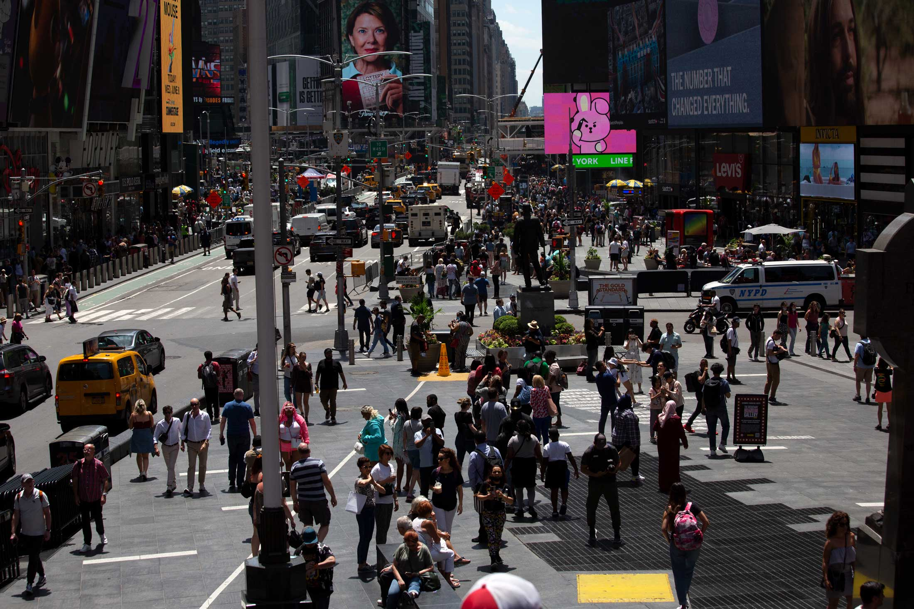

<!DOCTYPE html>
<html lang="en">

<head>
  <meta charset="utf-8">
  <title>Swiper demo</title>
  <!-- Link Swiper's CSS -->
  <link rel="stylesheet" href="css/swiper.min.css">
  <link rel="stylesheet" href="css/animate.min.css">


  <!-- Demo styles -->
  <style>
    * {
      margin: 0;
      padding: 0;
      font-family: '幼圆';
    }

    html,
    body {
      height: 100%;
    }
  </style>
</head>

<!-- <body  style="width: 100%;height: 100%; "> -->
  <body  style="width: 100%;height: 100%;background: url('img/790A5BF4-048E-4349-83FB-EF3395318F17.gif');background-size: 100% 100%;"></body>
  <!-- Swiper -->

  <div  style="width: 100%;height: 100%;background: rgba(56, 55, 55, 0.3);">

  </div>
  
  
  <!-- <video src="img/WeChat_20241203223739.mp4" controls   style="width: 100%;height: 100%;"></video> -->

  <div class="animated"   style="position: absolute;right: 100px;top: 100px;width: 600px;font-size: 25px;background: darkorange;padding: 20px;border-radius: 20px;color: #fff;z-index: 10;">
    <div class="animated bounceInDown">
      Let's begin our journey to explore the intricate details of New York City, 
    </div>
    <div class="animated bounceInLeft">
      uncovering its hidden gems, vibrant streets, and unique stories waiting to be discovered.
    </div>

    <!-- <div class="animated bounceInRight">
      how different spaces evoke different feelings.
      how different spaces evoke different feelings.
    </div>
    <div class="animated bounceInUp">
      how different spaces evoke different feelings.
      how different spaces evoke different feelings.
    </div>

    <div class="animated bounceInLeft">
      how different spaces evoke different feelings.
      how different spaces evoke different feelings.
    </div>
    <div class="animated bounceInRight">
      how different spaces evoke different feelings.
      how different spaces evoke different feelings.
    </div> -->

  </div>


  <!-- Swiper JS -->
  <script src="js/swiper.min.js"></script>
  <script src="js/swiper.animate.min.js"></script>
  <!-- Initialize Swiper -->
  <script>
    var mySwiper = new Swiper('.swiper-container', {
      on: {
        init: function () {
          swiperAnimateCache(this); //隐藏动画元素 
          this.emit('slideChangeTransitionEnd');//在初始化时触发一次slideChangeTransitionEnd事件
        },
        slideChangeTransitionEnd: function () {
          swiperAnimate(this); //每个slide切换结束时运行当前slide动画
          this.slides.eq(this.activeIndex).find('.ani').removeClass('ani');//动画只展示一次
        }
      }
    });

  </script>
</body>

</html>